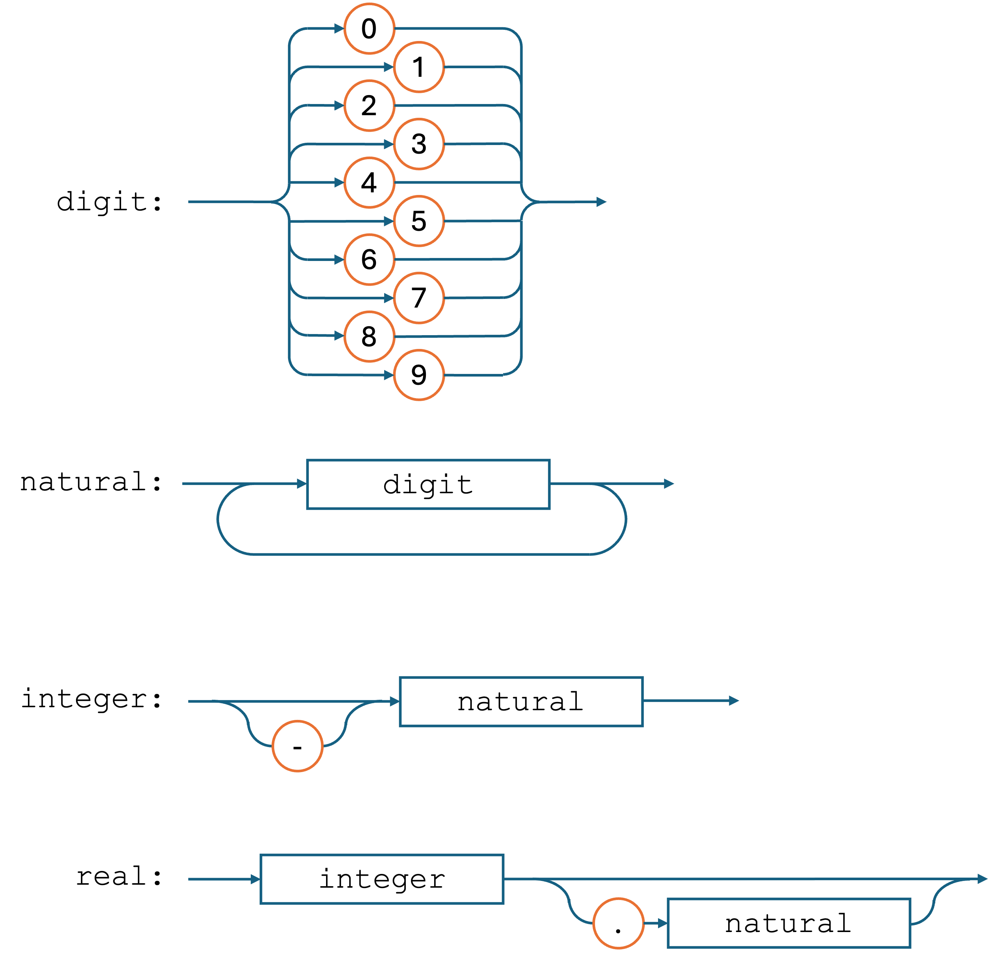

GCSE Link: None
There are certain sets of strings which cannot be represented as regular expressions (i.e. they
do not form a regular language). Take, for instance, the set
{anbn | n ≥ 1}
(which is {"ab", "aabb", "aaabbb", ...}).
There is no regular expression or finite state machine that can describe this set. (The regular
expression a+b+
includes strings like "aab" where the numbers of as and
bs are not the same.)
 Context-free languages are a superset of regular languages that are defined in terms of recursive production rules.
Context-free languages are a superset of regular languages that are defined in terms of recursive production rules.
This means that every regular language is context-free, but not every context free language is regular. There are two main ways to represent context-free languages, both shown below:
In Backus-Naur Form (BNF), the language is described in terms of terminal symbols (literal
characters like letters, digits or punctuation) and non-terminal symbols (defined in terms of
terminal and non-terminal symbols using production rules). Non-terminal symbols are always enclosed
in angled brackets, <>.
Example 1 shows a simple example of BNF being used to define different types of numbers.
 Example 1
Example 1
<digit> ::= 0 |
1 | 2 | 3 |
4 | 5 | 6 |
7 | 8 | 9
<natural> ::= <digit> |
<digit><natural>
<integer> ::= <natural> |
-<natural>
<real> ::= <integer> |
<integer>.<natural>
Let's go through it line by line:
<digit> is defined as
being any of the literal characters 0 to 9
(the | means "or" in BNF, just like in regex).
<natural> is defined as being either a single
<digit>, or a <digit> followed
by a <natural>. This is a recursive definition, allowing
<natural>s to be any length.
<integer> to be either just a
<natural> or a - followed by a
<natural>. This allows for both positive and negative numbers.
<real> number, which can either
be just an <integer>, or an <integer>
followed a . followed by a <natural>.
This allows for decimals.
The other way to represent context-free languages is using syntax diagrams. Simply follow the
arrows from the start to the end to see if a string is part of the language. If there are different
options, use forks in the path. Recursion is achieved by simply looping back around to the start.
Terminal symbols are put in circles and non-terminal symbols are put in rectangles.
Diagram 1 shows a syntax diagram which is equivalent to the BNF in Example 1.
 Diagram 1
Diagram 1

 Write a BNF production rule to describe the set
Write a BNF production rule to describe the set
{anbn | n ≥ 1}.
<valid-string> ::= ab |
a<valid-string>b